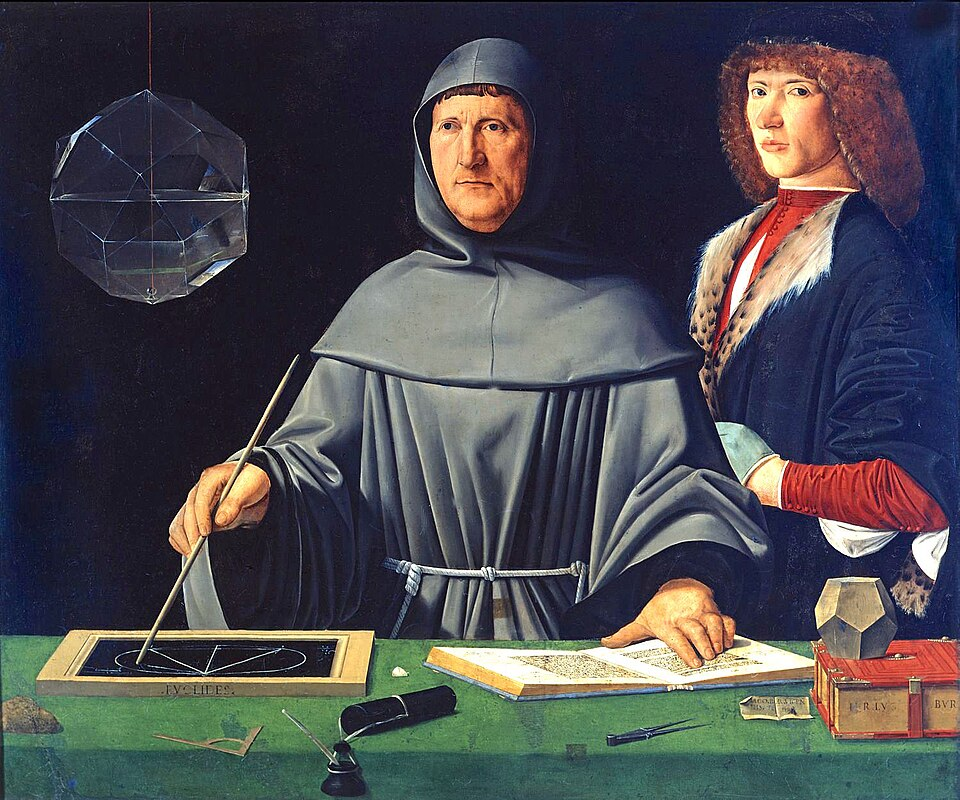
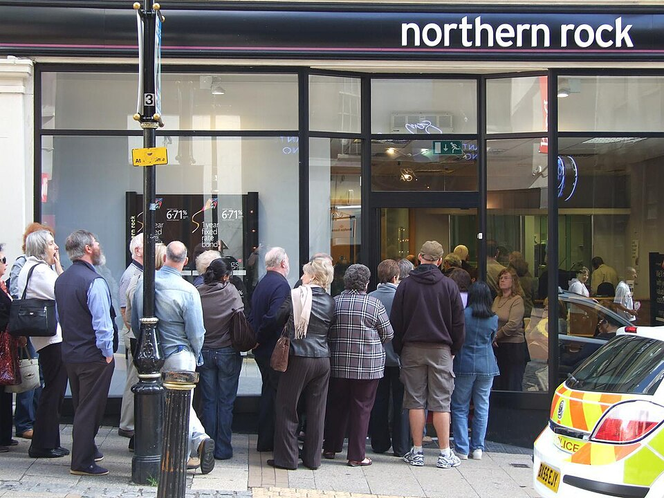

Banking and the Money Multiplier
Deposits · T-accounts · fractional reserves · how banks create money
What a bank actually does with your money
1 · Take in deposits
It pays you a little interest and keeps your money available on demand.
2 · Make loans and buy securities
It charges borrowers a much higher rate — mortgages, business loans, government bonds.
3 · Lives on the spread
Borrow short and cheap, lend long and dear. Economists call it maturity transformation.
Banks do not keep your money in a vault. Most of it is out working — which is exactly why banking needs rules.
Every bank keeps a T-account
Every T-account is double-entry bookkeeping

Venice, 1494 — Luca Pacioli writes it down
Italian merchants already kept their books this way; Pacioli's Summa de arithmetica was the first printed manual of it. The rule is simple: every transaction is entered twice — a debit and a credit.
| Single entry (a cash book) | Double entry (a T-account) |
|---|---|
| Follows only the cash | Records both sides of every deal |
| Debts and profit stay invisible | Shows assets, debts and net worth |
| Errors hide silently | Both sides must match — errors surface |
Reserves are born at the Fed
| THE FED — T-account | |
|---|---|
| Assets | Liabilities |
| Treasuries it bought + $1,000 | Bank reserves + $1,000 |
pays with reserves
| A COMMERCIAL BANK — T-account | |
|---|---|
| Assets | Liabilities |
| Reserves + $1,000 Treasuries − $1,000 | No change |
Why nothing else changed
The bank swapped a bond for reserves — an asset swap. The system's buying power did not change yet.
But the raw material now exists
Reserves are the fuel for lending. How banks turn this $1,000 into more — that is the rest of this lesson.
The bank run — the flaw in the design

Why runs happen
The bank owes every depositor their money on demand — but most of that money is out in loans. If everyone queues at once, the cash simply is not there.
Northern Rock, September 2007
Britain's first bank run in about 150 years — queues like this for days, until the state stepped in to guarantee deposits.
The fix: deposit insurance
The FDIC insures $250,000 per depositor. Insurance ends most runs before they start — nobody needs to queue.
Fractional reserve banking
Why it works
Depositors never all withdraw at once — and deposit insurance keeps it that way. A fraction is enough for everyday business.
What it means
Most of your deposit is not "in the bank". It has been lent out and is working in somebody else's account.
Required reserves and excess reserves
| Item | Definition | Example (rr = 10%, new deposit $1,000) |
|---|---|---|
| Required reserves | The legal minimum the bank must hold and may not lend | rr × deposits = $100 |
| Excess reserves | Reserves beyond the minimum — free to lend | reserves − required = $900 |
The ratio rr is the reserve requirement — set by the Fed.
A loan is not money leaving — it is money being born
| BEFORE — Bank A | |
|---|---|
| Assets | Liabilities |
| Reserves $1,000 | Deposit $1,000 |
the loan is a new asset
| AFTER — Bank A | |
|---|---|
| Assets | Liabilities |
| Reserves $100 Loan $900 | Deposit $1,000 |
Count the money
The original $1,000 deposit still exists — and the seller's new $900 exists too. M1 grew by $900.
Nothing left the bank
The $900 loan sits on the asset side; the deposit stays on the liability side. Only the mix changed.
One deposit, five rounds — watch the total grow
Collapsing the chain into a formula
| rr | Multiplier 1/rr |
|---|---|
| 5% | 20× |
| 10% | 10× |
| 20% | 5× |
The money multiplier
The numbers
rr = 10% → multiplier = 10. New reserves of $1,000 eventually support $10,000 of deposits — $9,000 of them created by lending.
Read it both ways
Same formula, two uses: how much money CAN a new reserve create — and how much does the money supply CHANGE when rr moves.
Two cases, worked step by step
| Case | ΔReserves | rr | Working | ΔDeposits |
|---|---|---|---|---|
| The Fed buys bonds — injects reserves | +$1,000bn | 10% | 1/rr = 1/0.10 = 10 1,000 × 10 | +$10,000bn |
| The Fed sells bonds — drains reserves | −$200bn | 5% | 1/rr = 1/0.05 = 20 −200 × 20 | −$4,000bn |
What changed in 2020 — the multiplier went quiet
March 2020
The Fed cut the reserve requirement to 0%. The textbook's rr is, right now, literally zero.
Banks still hold trillions
About $3.2 trillion of reserves — not because they must, but because the Fed pays interest on them.
So policy works differently
The Fed steers with interest rates, not with a 10× multiplier — the "ample reserves" world (4.6 — detailed in 4.7).
The multiplier is still what the exam wants — and still the clearest story of how lending creates money.
Who still uses rr — and who dropped it
Ample reserves — set the price
rr = 0% or none. The central bank pays interest on reserves, then moves that rate to steer lending.
| Economy | rr · pays interest? |
|---|---|
| United States | 0% (2020) · IORB 3.65% |
| United Kingdom | none (1981) · at Bank Rate |
| Canada | none (1992) · yes |
| Australia · New Zealand · Sweden | none · yes |
| Norway · Hong Kong · euro area · Switzerland | none / low, fixed · yes |
Scarce reserves — set the quantity
rr is still a live dial: raise it to drain lending, cut it to release it.
| Economy | rr (late 2026) |
|---|---|
| China | 7.5% — the main liquidity dial |
| Turkey · Brazil | 25% · 21% |
| Indonesia · Russia | 9% · 8.5% |
| India | 3% (cut from 4% in 2025) |
| China, India, Brazil and Turkey raise and cut rr to steer credit — and India pays no interest on required reserves. | |
The four multipliers, side by side
| Multiplier | Formula | Size |
|---|---|---|
| Spending (expenditure) | 1 / (1 − MPC) = 1 / MPS | 5.0× |
| Tax | − MPC / (1 − MPC) = − MPC / MPS | −4.0× |
| Balanced budget | 1 / MPS − MPC / MPS = 1 | 1.0× |
| Money | 1 / rr | 10.0× |
Same shape, different target
All four are 1 ÷ the fraction that leaks out each round — saving (MPS) for fiscal, required reserves (rr) for money. But fiscal multipliers move aggregate demand → real GDP; the money multiplier moves the money supply.
One is a ceiling
The simple money multiplier is a maximum: banks may sit on excess reserves and the public may hold cash — and since 2020, rr = 0%.
What to walk out with — fill the blanks
Banks create money by ____ — loans create ____.
____ = ____ × deposits. Only ____ can be lent.
ΔDeposits = ΔReserves × ____ — that is the ____. At rr = 10%, $1,000 of new reserves becomes ____ of deposits.
Since 2020, rr = ____. The Fed steers with ____.